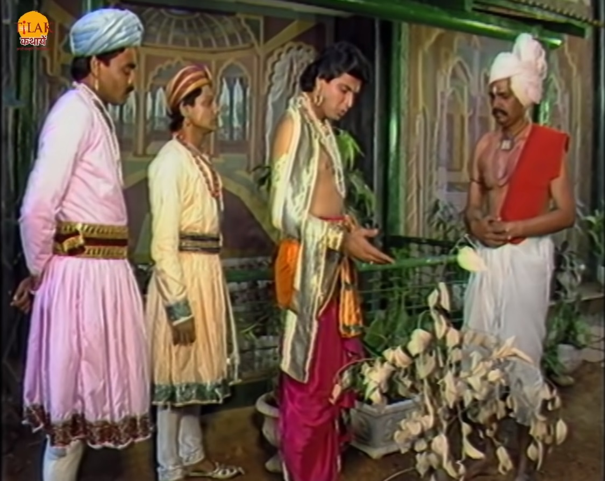
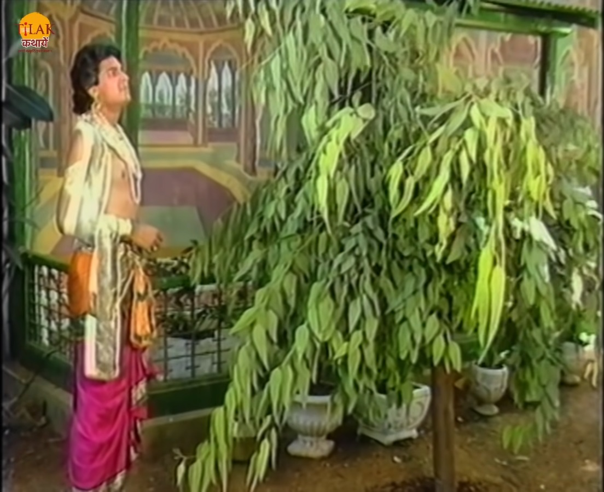
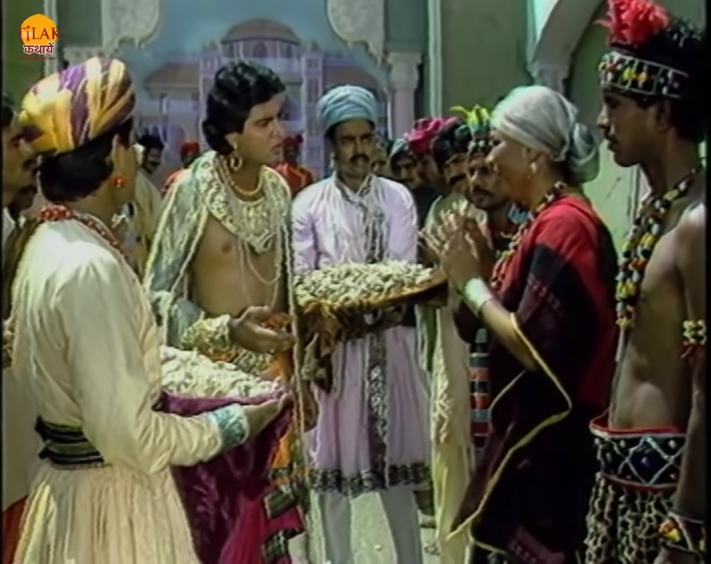
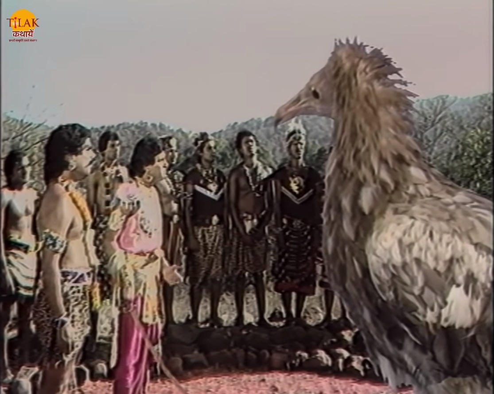

|  | राजा विक्रम का उत्तर सुनकर बेताल उसे कहता है की तुम्हें अच्छा निर्णय किया है लेकिन मेरी शर्त के अनुसार तुम्हें बोलना नहीं था और तुम फिर से बोल पड़े इसलिए में जा रहा हूँ। बेताल फिर से अपने पेड़ पर जाकर लटक जाता है। विक्रम बेताल को फिर से पकड़ कर ले चलता है और बेताल फिर से उसे एक राजकुमार की कहानी सुनता है जिसका नाम था जीमूतवाहन। राजकुमार के बगीचे में एक मुरझाया हुआ पौधा था वह उस पौधे को देख कर दुःखी होता है और उसकी देखभाल करने का दायित्व स्वयं लेता है और उस पौधे की रोज़ धेखभाल करता है पौधा फिर से हरा भरा हो जाता है और बहुत समय बीतने के बाद वह पौधा पेड़ बन जाता है वह पेड़ राजकुमार की सेवा से प्रसन्न हो जाता है और जीमूतवाहन वह वृक्ष बोल पड़ता है और कहता है की में कल्पवृक्ष हूँ तुम्हारी सेवा से मैं प्रसन्न हूँ तुम जो माँगे वो तुम्हें मिल जाएगा। राजकुमार कहता है की में राजकुमार हूँ मुझे कुछ नहीं चाहिए। तो कल्प वृक्ष उसे कहता है की खुद के लिए नहीं तो अपने परिवार के लिए माँग तो राजकुमार जीमूतवाहन कहता है की हम राजा है और राजा का परिवार तो उसकी प्रजा होती है अगर देना ही है तो प्रजा के लिए दे दो जिस से उनके दुःख दूर हो सके। कल्प वृक्ष बहुत सारा धन प्रकट का देता है और राजकुमार को कहता है की लो राजन अपनी प्रजा के दुःख दूर कर दो और कहता है की जीवन की महानता स्वयं सुखी होने में नहीं, दूसरों का दुःख दूर करने में है। |  |
|  | राजकुमार जीमूतवाहन उस सारे धन को प्रजा में बँटवा देता है। तो एक औरत उनसे धन नहीं लेती और उनसे कहती है की उसे धन नहीं चाहिए आप हमारी जाती की रक्षा कर दे यही बहुत होगा। तो राजकुमार उस से पूछता है ऐसा क्या हो गया जो आप रो रही हैं। तो वह स्त्री उन्हें बताती है की वो पर्वतों में रहने वाली एक नाग जाति के हैं उनके वहाँ एक बहित विशाल पक्षी आता है और एक आदमी को उठा कर ले जाता है। ऐसा रोज़ होता है ऐसे तो एक एक करके हम समाप्त हो जाएँगे इसलिए मैं आपसे मदद माँगने आए हैं। राजकुमार वादा करता है की वो कल ही मलायलिन पर्वत की ओर जाएगा और उनकी रक्षा करेगा। जीमूतवाहन नाग जाति के क़ाबिले में पहुँच जाता है। नाग क़ाबिले के राजा की बेटी राजकुमार का स्वागत करती है और उनह विश्राम करने के लिए कहती है तो राजकुमार उन्हें कहता है की वो अभी विश्राम नहीं करेंगे अगर उन्होंने विश्राम किया तो एक और जैन चली जाएगी। राजकुमार आगे बढ़ता है और विशाल पक्षी का भोजन बनने वाली व्यक्ति शंकचूड़ की माँ से मिलता है और उन्हें कहता है की उनके बेटे की जगह वो लेगा और वो अपने प्राण देगा। शंकचूड़ की माता उसके पास जाती है और उसे बताती है की आज उसके प्राण बच गए हैं क्योपनकी राजकुमार ने अपने प्राण देने का वादा किया है। शंकचूड़ अपने प्राणों की जगह किसी और को नहीं लेने देगा। विशाल पक्षी भी आ जाता है तो शंकचूड़ जीमूतवाहन को कहता है की तुम मेरी जगह अपने प्राण नहीं दे सकते। |  |
जीमूतवाहन कहता है की मैं क्षत्रिय हूँ और मेरा धर्म है की मैं तुम्हारी रक्षा करूँ दोनों में बहस छिड़ जाती है। यह देख कर विशाल पक्षी जीमूतवाहन से उसके बारे में पूछता है की वो यहाँ क्यों आया है तो जीमूतवाहन उस पक्षी से कहता है की वो ऊँक रक्षा करने के लिए यहाँ आया है और वो अपनी प्रजा की रक्षा करने के लिए उसकी भी हत्या कर देगा। राजकुमार की बात सुन विशाल पक्षी खुश हो जाता है और उस से कहता है की वो भोजन कैसे पाएगा तो राजकुमार जीमूतवाहन उन्हें कहता है की वो आज से उनके भोजन का प्रबंध करेगा। यह सुन पक्षी वहाँ से चला जाता है। अब बेताल विक्रम से पूछता है की अब ये बता की शंकचूड़ और जीमूतवाहन में से कौन बहादुर है तो शंकचूड़ बहदुर है क्योंकि उसकी जगह जीमूतवाहन राजकुमार ने उसका स्थान ले भी लिया था उसके बाद भी वो वहाँ आकर अपने प्राणों का बलिदान देने वाले को रोक देता है। जीमूतवाहन उस विशाल पक्षी को कल्प वृक्ष की मदद से भोजन का प्रबंध करवा देता है।
| Previous Story | Home | Next Story |